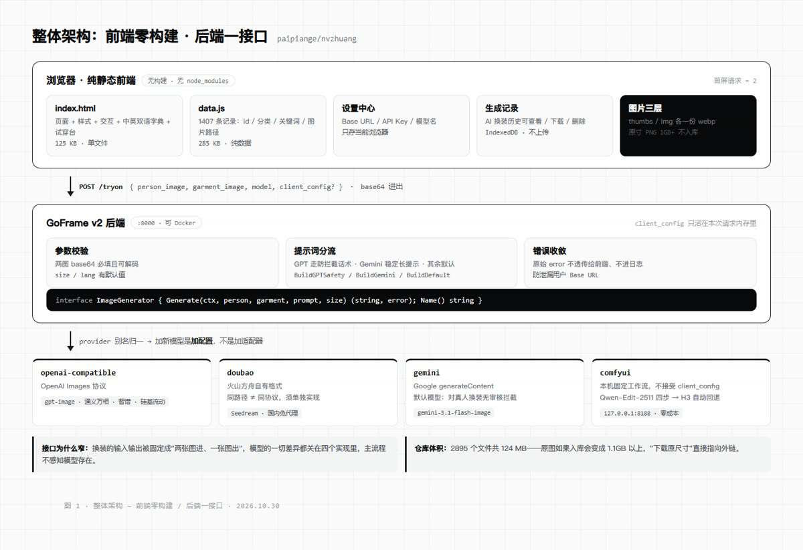
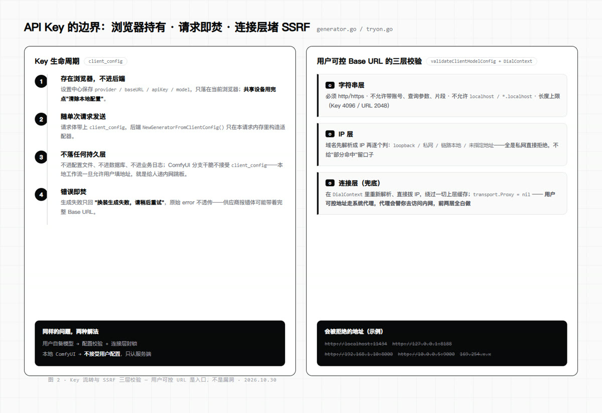

一个 index.html 装下 1407 张图：这个开源 AI 换装站的技术选择
项目：GitHub paipiange/nvzhuang · MIT · 2026-10-29 建仓，28 小时 269 star / 104 fork。本文只拆工程结构：前端为什么敢不用构建、后端怎么用一个两方法接口吃掉四家模型、以及它怎么把用户自己的 API Key 接进来又不变成内网跳板。
整个站点只有一个 125KB 的 index.html，页面结构、样式、交互、中英双语字典、试穿搭配台全塞在里面；再加一份 285KB 的 data.js 存 1407 条记录。没有 package.json、没有构建产物。首屏只有两个请求，代价是可维护性。
缩略图 webp 给网格、展示图 webp 给弹窗、原尺寸 PNG（1GB 以上）根本不进仓库，下载按钮直接指向原始站点。仓库最终 124MB——如果原图入库，克隆它的人要先付 1.1GB 的流量。
ImageGenerator 只有 Generate() 和 Name()：两张图进、一张图出，模型差异全部关在实现里。provider 用别名归一，加一个国内模型是三行配置，不是第三个适配器。
04 · Key 交给浏览器，然后在连接层堵 SSRF
用户自填的 Base URL / API Key 只存在当前浏览器，随单次请求发给后端，不进配置、不进数据库、不进日志；同时用户可控的地址必须在字符串层、IP 层、连接层各过一遍校验。
建仓到本文写作不到 30 小时：269 star、104 fork，fork/star 比 38.7%。这个比例在纯展示型项目里偏高——说明相当一部分人不是点个星就走，是真把它 clone 下来跑了一遍。仓库 2895 个文件、124MB，主语言是 HTML（前端静态站），后端 GoFrame v2 在 backend/ 里。
另有 4 个主题分类合计 441 条，本文不展开。
stars 269
forks 104
created 2026-10-29
license MIT
records 1407
repo size 124 MB / 2895 files

▲ 整体架构：前端零构建 / 后端一接口 / 模型四实现
一个文件里同时住着页面结构、样式、交互逻辑、中英双语字典和试穿搭配台。克隆下来起个静态服务器就能用，不需要装环境、不需要等构建。
为什么敢这么干：这是个单人维护、以"别人一打开就能用"为首要目标的展示站。构建链的价值在多人协作和长周期演进，这里的最短路径是零依赖。代价得认——改一处样式要全文搜索，第二个人接手会立刻难受。取舍是清醒的，不是无知。
首屏请求 2 个：index.html + data.js，其余图片懒加载
缩略图给网格、展示图给弹窗、原尺寸 PNG 干脆不进仓库。thumbs/ 和 img/ 各存一份 webp，下载原尺寸的按钮直接指向原始站点，仓库里只留一条外链路径。
判断点："展示要快"和"下载要全"是两个问题。前者可以用体积换首屏，后者不该让克隆仓库的人替你付流量。仓库因此停在 124MB，而如果把 1GB 以上的原图塞进 Git，这个项目大概率不会有 104 个 fork。
assets/thumbs/ · assets/img/ · 原寸 → 外链
接口窄到不能再窄：Generate(ctx, 人像, 服装, 提示词, 尺寸) 返回一张图，加一个 Name()。换装这件事的输入输出被固定成"两张图进、一张图出"，模型的一切差异都关在实现里。
别名归一：doubao / ark / volc / volcengine / huoshan 落到同一个豆包适配器；openai / qwen / wanx / zhipu / siliconflow 落到同一个 OpenAI Images 适配器。所以"支持通义万相、智谱、硅基流动"不是写了三个适配器，而是三行配置。
一个容易踩的坑：豆包用的也是 /images/generations 这个路径，但请求体是火山自己的格式。路径相同不等于协议相同——它必须单独实现，不能挂在 OpenAI 兼容分支下面。
backend/internal/logic/tryon/generator.go
04提示词按模型的脾气分流prompt.go3 套模板
代码注释里写着最实在的一句话：默认模型选 Gemini，因为 GPT Image 系列对真人换装会被官方安全审核拦下。于是提示词拆成三套：GPT 走防拦截的保守话术，Gemini 用稳定的英文长提示，其余按语言选默认模板。
这不是玄学调 prompt，而是把"各家审核尺度不同"当成工程约束写进代码——哪个模型会因为哪个词被拒，是要靠实测摸出来的，写下来才不会第二次踩。
BuildGPTSafety / BuildGemini / BuildDefault
05Key 交给浏览器，SSRF 在连接层堵本文最硬的一段3 层校验
用户在设置中心填自己的 Base URL、API Key、模型名，只存在当前浏览器。请求时随 client_config 一起发，后端只在本请求内存里用一次：不进配置文件、不进数据库、不进业务日志。
但"用户可控的 URL"天生是 SSRF 入口，所以校验做了三层：
① 字符串层 必须 http/https，不能带账号、查询参数、片段，不能是 localhost 或 *.localhost；
② IP 层 把域名解析成 IP 后逐个判 loopback / 私网 / 链路本地 / 未指定地址，全是私网直接拒；
③ 连接层 在 DialContext 里重新解析、直接拨 IP，绕过一切上层缓存。
最容易漏掉的一行是 transport.Proxy = nil。用户可控地址如果走系统代理，代理会替你去访问内网，前面两层校验全白做。这种漏洞不会在功能测试里暴露，只会在某天被打穿。
错误处理同理：返给前端的只有"换装生成失败，请稍后重试"，原始 error 不透传——供应商的报错体里可能带着完整的 Base URL，拼进日志等于把用户的 Key 地址漏出去。
validateClientModelConfig + newModelHTTPClient

▲ Key 流转与 SSRF 三层校验：用户可控 URL 是入口，不是漏洞
06本地 ComfyUI：固定工作流 + 自动回退零成本离线900s 超时
ComfyUI 适配器只认服务端配置里的工作流文件，节点映射也全部来自服务端。用户不能指定地址，因为这个分支一开放，后端就成了内网请求跳板——和上面那条 SSRF 是同一个问题的两种解法。
细节：默认优先 Qwen-Image-Edit-2511 配 4 步 Lightning LoRA；模型没就绪自动回退到视频模型 H3，抽第 31 帧定格成图。轮询间隔 1 秒，超时给到 900 秒——视频模型确实慢，按图片接口的 30 秒会把正常请求判死。另有 GET /comfyui/health 只检查工作流和模型是否可用，不上传图片、不执行生成。
workflows/comfyui_qwen_image_edit_2511_api.json
前端是纯静态，后端可选。只想看图集，起个静态服务器就够了；要试穿再启后端。
# 前端：零构建
python3 -m http.server 3000
# 后端：Docker 优先
cd backend && cp .env.example .env
docker compose up -d # 监听 :8000
# 无 Docker
go run main.go
前端找后端有四段优先级，依次是：设置中心里保存的地址 → HTML 加载前的 window.AI_API_URL → URL 参数 ?tryon=… → 本地访问时自动回退到 127.0.0.1:8000。前两个是配置，后两个是"本地开发不用配"的体贴。
· star / fork / 建仓时间取自 GitHub API，查询于 2026-10-30 上午，数字随时在变；
· 代码结论来自主分支源码（generator.go、tryon.go、backend/README.MD），项目为 MIT 协议；
· 站点图像均为 AI 生成的概念服装设计，非真实品牌商品；本文只讨论工程结构，不涉及图集内容；
· 涉及第三方模型的审核策略，以各家官方规则为准。